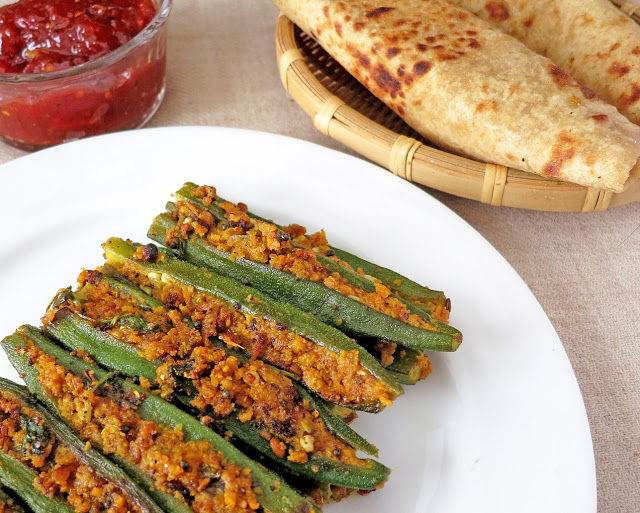

Gujarati cuisine is a vibrant and diverse culinary tradition that reflects the unique culture and geography of Gujarat, a state in western India.
Here's a brief introduction:
Predominantly Vegetarian:
Gujarati cuisine is largely vegetarian, influenced by Jainism, which emphasizes non-violence.
This has led to the development of incredibly creative and flavorful vegetarian dishes.
A Balance of Flavors:
Gujarati cuisine is largely vegetarian, influenced by Jainism, which emphasizes non-violence.
This has led to the development of incredibly creative and flavorful vegetarian dishes.
Regional Variations:
Different regions of Gujarat, such as Kutch, Saurashtra, and Surat, have their own distinct culinary styles.
This results in a wide range of dishes and flavors.
Vagharelo rotlo is a traditional Gujarati dish that repurposes leftover rotlo, a thick flatbread typically made from millet or sorghum flour. The rotlo is crumbled and then tempered, or "vagharelo," with spices, onions, tomatoes, and sometimes other vegetables. This process transforms the dry, leftover bread into a moist, flavorful, and satisfying meal. It's a simple, rustic dish that highlights resourcefulness and the ability to create delicious food from basic ingredients.
Sev tameta is a Gujarati vegetarian dish featuring a tangy and slightly sweet tomato gravy, topped with crispy gram flour noodles called sev. This quick and easy dish balances sweet, sour, and spicy flavors, with the soft tomatoes contrasting the crunchy sev. It's commonly served with Indian flatbreads like roti or chapati, and while it originates from Gujarat, it's also enjoyed in neighboring regions of India.

Bhindi Sambhariya, a beloved Gujarati dish, showcases the art of transforming simple okra into a flavorful and satisfying meal. The process begins with selecting small, tender okra pods, which are then washed and thoroughly dried to prevent sliminess during cooking. A crucial step involves creating a lengthwise slit in each okra pod, forming a pocket for the flavorful stuffing.
The heart of Bhindi Sambhariya lies in its aromatic stuffing. This mixture typically combines grated fresh coconut, finely chopped coriander leaves, and a blend of spices, including coriander-cumin powder, turmeric powder, garam masala, and red chili powder. Ginger-green chili paste adds a pungent kick, while roasted peanut powder lends a nutty richness.
Oondhiyu is a celebrated Gujarati winter dish, a culinary masterpiece that showcases the region's rich agricultural heritage and the art of slow cooking. It's a symphony of seasonal vegetables, aromatic spices, and unique dumplings, all harmoniously blended into a flavorful and comforting stew.
The dish's foundation lies in its diverse array of winter vegetables. Small, tender brinjals (eggplants), sweet potatoes, regular potatoes, flat green beans (papdi), and plump green beans are carefully selected, each contributing its distinct texture and flavor. These vegetables are often stuffed with a spiced mixture, further enhancing their taste.
A defining characteristic of oondhiyu is the inclusion of muthiya, steamed or fried dumplings made from gram flour and fenugreek leaves.